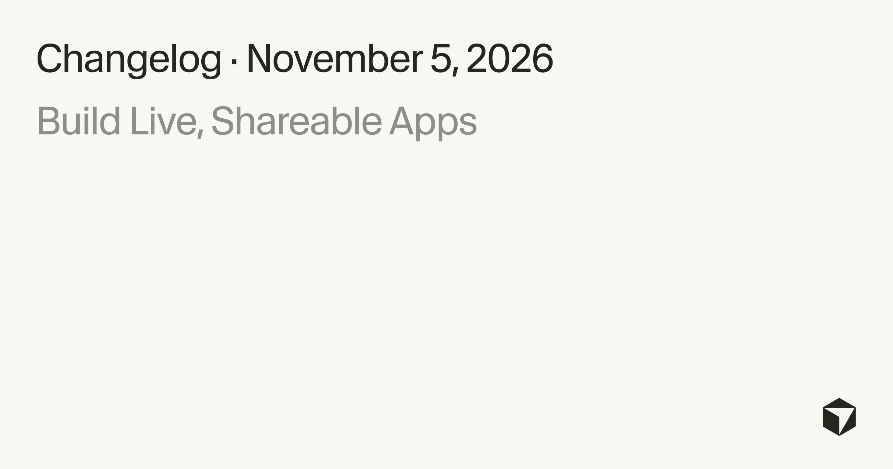
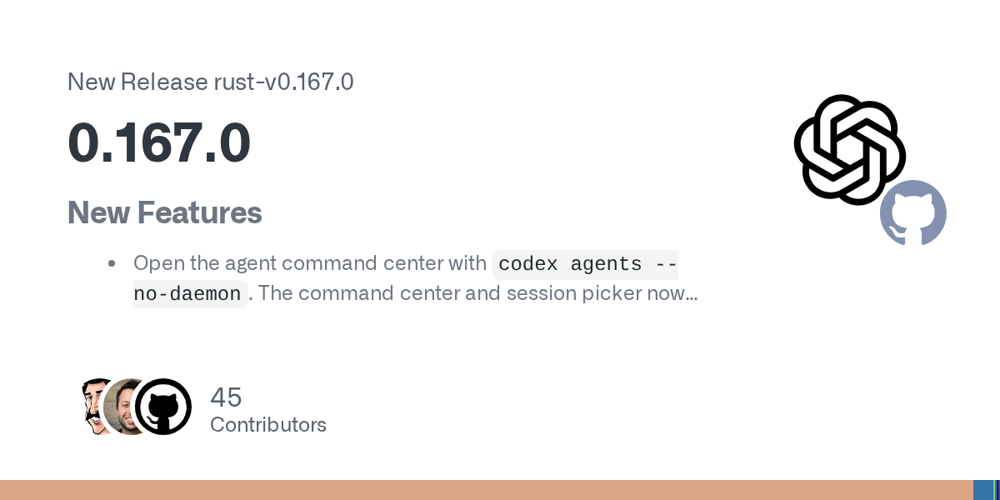
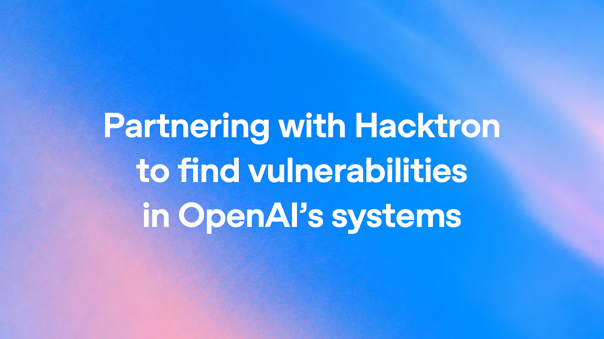

AI Intelligence Daily · 2026-11-07（周六）
统计窗口：2026-11-06 08:00 → 2026-11-07 08:00（上海）· 事实与判断分区 · 国内/国际双轨 · 吸收快讯：09:21 Cursor Live Apps / 11:22 Codex CLI 0.167.0 / 19:20 Kimi Desktop 1.3.2 + CodeBuddy 2.181.0 / 23:29 Codex Desktop CVE-2026-110930 · 一线 Desktop/Work Agent 新上线 = 4（Codex CLI 0.167.0 · Kimi Desktop 1.3.2 · CodeBuddy 2.181.0 · Claude Code 2.1.319） · npm：codex 0.167.0 / claude-code 2.1.319 / codebuddy 2.181.0 / kimi-code 2.5.2 / minimax-code 0.7.6 / dsh 0.2.2-rc.1（RC）/ agent-desktop 1.2.0 · Desktop：ZCode 3.17.2 · MiniMax CDN 3.1.11（changelog 仍 3.1.10）· Kimi Desktop 1.3.2 · CodeBuddy 2.181.0 · agent-desktop ★18,101 · dsh-superagent-prototype ★20,235 · DeepInfer ★25,552 · FlashProve ★937 · Hyra-results ★213 · opencode ★225,061 · servers ★91,839
今日一句话判断
窗内主线是 Agent Memory「dreaming」工程化（Anthropic）+ Desktop 信任门前安全事故（Codex Windows CVE-2026-110930）+ Cloud Agent 交付链产品化（Cursor Live Apps / Claude cloud env / Antigravity remote）+ 国内 Desktop/CLI 连发（Kimi 1.3.2 / CodeBuddy 2.181 / Codex CLI 0.167）+ Git 存储为 Agent 规模重建（GitHub Rubicon）。 desktop_shipping=4。对你两条主线：记忆分层与 idle 纠错晋升、登录/project-trust 前的 argv 消毒与 Cloud Agent 托管交付门禁同时变成选型硬问题；Rubicon 与 Pierre/Pando continuum 说明「Agent 并发写 Git」已逼到存储架构层。
专栏一｜新闻
本栏结构： - 国际头条：Anthropic《The components of agent memory》+ Dreaming（Managed Agents Dreams API research preview） - 国际头条：OpenAI Codex Desktop Windows CVE-2026-110930（快讯 23:29 吸收；信任门前 RCE） - 国际头条：Cursor Build Live Apps（快讯 09:21 / Daily 11-06 漏收补推） - 国际中栏：Claude Code cloud sessions 自动配环境 + 2.1.319 latest（desktop_shipping） - 国际中栏：GitHub Project Rubicon 新 Git 存储架构 - 国际中栏：Google Antigravity Remote Agents（+ Voice mode 附注） - 国际中栏：OpenAI Codex CLI 0.167.0（快讯 11:22；desktop_shipping） - 国内头条：腾讯 CodeBuddy Code 2.181.0（快讯 19:20；desktop_shipping） - 国内中栏：Kimi Code Desktop 1.3.2（快讯 19:20；desktop_shipping） - 国际短讯：OpenAI × Hacktron（Daybreak Red 扩面） - 不升格：MiniMax CDN 3.1.11（changelog 仍 3.1.10）· Qwen teaser 无权重/API · kimi-code canary 2.6.0 · GitHub Next Enclaves（窗外 + HN amplify）· ZCode 仍 3.17.2 · dsh 仍 RC · agent-desktop 仍 1.2.0 · codex alpha 0.169.0-alpha.2 · BioBasicsBench / FMF / ChatGPT Remix Biz
排序依据：重要度 → 用户相关性 → 时效。
1. Anthropic：Agent Memory 组件与 Dreaming——session 笔记 vs idle 纠错/建 wiki/晋升注入层
S/强A · NEW · 国际 · D/B/C · Agent Memory / Dreaming · watchlist 205 · 研究文 Published Nov 6, 2026 · @AnthropicAI 2026-11-06T21:16:17Z（截稿约 247k impr / 3974 likes）· Managed Agents Dreams API research preview（betadreaming-2026-04-21）· 非 Desktop shipping
发生了什么（事实）
- anthropic.com/research/components-of-agent-memory（November 6, 2026）：把 Agent Memory 拆成可工程化组件——session 内写 notes 与 idle dreaming（纠错、建 wiki、把稳定知识晋升到注入层）分轨。
- 评估叙述含 CL-Bench / Pokémon / Stainless wiki 等；MEMORY.md 注入上限叙述为 200 lines / 25KB。
- 设计约束强调：输入 store 不修改，dreaming 产出新 store（避免就地污染）。
- 产品面：Managed Agents Dreams API docs 标 research preview；beta header
dreaming-2026-04-21。 - 官方 X：@AnthropicAI 2026-11-06T21:16:17Z 放大研究文（截稿互动如上）。

图 1 · Anthropic Agent Memory 研究页 OG · 来源：anthropic.com/research/components-of-agent-memory
我的判断
- S/强A。把「记忆」从模糊产品口号推进到可测组件 + idle 晋升管线 + 注入预算——对 Memory/Skill/Context 预算与多租户隔离直接加压。
- Dreams API 仍是 research preview：不能写成「全量生产默认开 dreaming」。
往后看
- Dreams API 出 preview 的 SLA/计费；wiki 晋升误伤率；与 Claude Code / Managed Agents 产品面并表。
对智能体互联网
- 强相关。 跨会话/跨 Agent 的记忆分享需要不可变输入 store + 显式晋升；否则委托链上的「记忆投毒」难审计。
对 Work·Agent 引擎
- 强相关。 (1) session notes vs idle dreaming 双轨；(2) MEMORY.md 200 行/25KB 类注入预算；(3) 输入只读、产出新 store 的 CAS 式记忆演进。
建议动作
- 通读研究文 + Dreams docs；对照自有 Memory 层是否「就地改写」。
- 把注入预算（行数/KB）做成可配置硬上限。
- 评估 idle 任务调度与沙箱：dreaming 是否应降权运行。
来源：components-of-agent-memory · Dreams API docs · @AnthropicAI
2. OpenAI Codex Desktop Windows CVE-2026-110930：Explorer 路径注入，登录/project-trust 前可执行（快讯吸收）
强A · NEW（快讯 23:29 吸收 / Daily+全日漏收补推） · 国际 · G/C/F/B · Desktop 信任门前 RCE · watchlist 204 · NVD published 2026-11-05T20:17:40.827Z · GHSA-f2g3-r2rh-7h5f high 2026-11-05T21:34:53Z · @CERTpy amplify 13:29Z Nov6 · desktop_shipping=0（安全事故，非功能发船）
发生了什么（事实）
- 官方顾问：openai.com/security/advisories/cve-2026-110930；NVD：CVE-2026-110930；GHSA：GHSA-f2g3-r2rh-7h5f。
- 机制：Explorer「Open project in ChatGPT」路径引号未消毒 → argv 注入；可在登录 / project-trust 之前以当前用户权限执行（CWE-88；CVSS 8.0）。
- 影响区间：独立版 26.820.60940–26.1002.52244；Store/MSIX 26.820.7780.0–26.1002.7124.0；修复 ≥26.1007.21434 / Store ≥26.1007.2314.0。
- 本窗放大：@CERTpy 2026-11-06 13:29Z；官方 X 未见专帖。与 201 Codex CLI 0.167.0 分列（CLI 功能发船 ≠ Desktop 安全事故）。
我的判断
- 强A。把威胁模型钉在「信任门之前」——凡是 Desktop/Explorer 集成、自定义 URL/路径启动的产品都要复查 argv 消毒与「未登录不执行」。
- 无可靠原文配图 → 不配图。
对智能体互联网
- 强相关。 身份/认证完成前的执行面是 Discovery 与委托协议的反面教材；信任状态机必须默认拒绝。
对 Work·Agent 引擎
- 强相关。 Explorer/Deep Link/自定义协议启动路径的参数消毒与 project-trust 门闩是回归必测项。
建议动作
- Windows Codex Desktop 升到修复阈值以上；核查 Store 通道版本。
- 自研「从资源管理器打开项目」路径做引号/argv 模糊测试。
- 与 Datadog 等 trust-before-prompt 研究并读。
来源：OpenAI advisory · NVD · GHSA-f2g3-r2rh-7h5f · flashes/2026-11-06-2329.md
3. Cursor Build Live Apps：Cloud Agent → 托管应用（含 Postgres + SSO + 双门禁）（快讯吸收 / Daily 漏收补推）
强A · NEW（快讯 09:21 / Daily 11-06 漏收补推） · 国际 · B/C/E/F/G · Cloud Agent 交付链 · watchlist 200 · changelog Nov 5, 2026 · @cursor_ai 2026-11-05T21:41:10Z · 非 Desktop shipping
发生了什么（事实）
- Changelog：cursor.com/changelog/build-live-apps（Nov 5, 2026）；文档：cloud-agent/apps。
- Cloud Agent：脚手架 + Postgres + Cursor SSO + 托管；deterministic + agentic 安全门禁；团队管理 secret/下架；Origin/GitHub；需付费 + Cloud Agents。
- Daily 11-06 vendor-check 写「changelog 无 Nov 5」→ 漏收；本报吸收快讯补推。

图 2 · Cursor Build Live Apps changelog OG · 来源：cursor.com/changelog/build-live-apps
我的判断
- 强A。把 Cloud Agent 从「改代码」推到「交付可登录的托管 app」——与你的 Cloud Agent / Runtime / 多租户线直接对标；双门禁是产品化安全叙事。
对 Work·Agent 引擎
- 强相关。 对照：托管 DB、SSO 挂载、deterministic 门禁 vs agentic 门禁、团队 secret 治理、下架路径。
建议动作
- 读 changelog + apps docs；评估是否替代自建预览环境。
- 实机测发布门禁与 GitLab 源是否支持。
- 与 Agent SDK（10-20）产品边界并表。
来源：build-live-apps · docs apps · @cursor_ai · flashes/2026-11-06-0921.md
4. Claude Code cloud sessions：自动配环境（deps/network/API keys）+ 2.1.319 latest
强A · NEW · 国际 · C/E/F/B · Cloud Agent 环境 · watchlist 206 · @ClaudeDevs 2026-11-06T19:58:33Z（截稿约 239k impr / 4240 likes）· docs cloud-environments · Claude Code npm latest 2.1.319 @2026-11-06T00:58:56.366Z（相对 2.1.318@11-03）· desktop_shipping 计入 2.1.319
发生了什么（事实）
- @ClaudeDevs 宣布 cloud sessions 自动配置环境（依赖、网络、API keys）；文档：code.claude.com/docs/en/cloud-environments；面向 Pro/Max/Ultra。
- 密钥经 proxy 挂载，叙述强调 Claude 不见明文。
- 同窗 npm：
@anthropic-ai/claude-code@2.1.319latest（2026-11-06T00:58:56.366Z）。快讯全日多把 next 当未升格；本报按 latest 计 shipping。 - CHANGELOG 要点（2.1.319）：MCP tasks 后台化、
permissions.denyInsteadOfPrompting、多项安全修复（含 sandbox escape worktree、Bash bypass 等叙述）。

图 3 · @ClaudeDevs cloud environments 帖附图 · 来源：x.com/ClaudeDevs/status/2118795192090386454
我的判断
- 强A。Cloud Agent「开箱即跑」依赖密钥挂载模型——proxy 不见明文是正确方向，但仍须核验代理边界与日志残留。
- 2.1.319 安全修复 + 权限 DSL 强化，值得立刻跟版。
对智能体互联网
- 中～强。跨租户密钥挂载与「模型不见明文」是委托/凭据原语的产品样板。
对 Work·Agent 引擎
- 强相关。 环境自动装配、MCP 后台任务、denyInsteadOfPrompting、worktree/sandbox 逃逸回归。
建议动作
npm i -g @anthropic-ai/claude-code@2.1.319；读 CHANGELOG 安全项。- 对照 cloud-environments 文档设计自有密钥 proxy。
- 回归 sandbox escape / Bash bypass 相关用例。
来源：@ClaudeDevs · cloud-environments · npm @anthropic-ai/claude-code
5. GitHub Project Rubicon：为数千并发 Agent 重建 Git 存储（Blob + Ref-CAS）
强A · NEW · 国际 · C/B/H · Git 存储架构 · watchlist 207 · 博文标 November 5, 2026 · @github 2026-11-06T22:17:58Z 放大 · limited private preview → early 2027 · continuum watchlist 191 Pierre / 183 Pando · 非 Desktop shipping
发生了什么（事实）
- 工程博文：Inside GitHub’s new Git storage architecture（标 November 5, 2026）。
- 内测叙述：5000 concurrent agents / 7200 pushes/s；架构要点 Blob + Ref-CAS；状态为 limited private preview，目标 early 2027。
- @github 2026-11-06T22:17:58Z 放大。与 OpenAI Pierre（Code Storage→Codex）及 Pando「Scaling Git」同属「Agent 写爆 Git」应对弧。
图 4 · GitHub Rubicon 工程博文 OG · 来源：github.blog/.../inside-githubs-new-git-storage-architecture/
我的判断
- 强A。存储层为 Agent 并发显式重做——说明「多 Agent 并行 push」已不是边缘场景；对你的 Workspace/Sandbox/多租户 Git 策略有硬参考。
对智能体互联网
- 中。跨 Agent 协作若共享远端仓，CAS/ref 模型影响冲突与审计语义。
对 Work·Agent 引擎
- 强相关。 对照：并发 push 限流、ref 事务、blob 去重、预览环境的 Git 后端选型。
建议动作
- 读博文；评估自建 Git 服务是否需 CAS/ref 事务。
- 与 Pierre / Pando continuum 并表跟踪 preview 准入。
- 压测本机多 Agent 并行 push 瓶颈。
来源：github.blog Rubicon · @github
6. Google Antigravity Remote Agents：独立 cloud VM + 手机解权限（+ Voice mode 附注）
强A · NEW · 国际 · C/B/F · Remote Cloud Agent · watchlist 208 · @antigravity 2026-11-06T02:27:01Z（截稿约 194k impr / 3064 likes）· paid consumer · 同窗 Voice mode @18:00Z（Gemini Live）可附注 · 非 Desktop shipping
发生了什么（事实）
- @antigravity 宣布 Remote Agents：跑在独立 cloud VM；支持手机端解权限；面向 paid consumer。
- 同窗另有 Voice mode（约 18:00Z，Gemini Live）——本报作同条附注，不单开头条。
图 5 · @antigravity Remote Agents 帖附图 · 来源：x.com/antigravity
我的判断
- 强A。Remote = 独立 VM + 移动端权限确认，补齐「云端 Agent 谁点同意」的 UX；与 Cursor Live Apps / Claude cloud env 同属 Cloud Agent 交付周。
对 Work·Agent 引擎
- 强相关。 远程 VM 生命周期、移动审批、付费消费者档位与企业多租户差异。
建议动作
- 若在 Antigravity 付费档：试 Remote + 手机解权限闭环。
- 对照自有 Cloud Agent 的移动审批通道。
- Voice mode 仅作交互面信号，不升格为模型发船。
来源：@antigravity
7. OpenAI Codex CLI 0.167.0：command center / 多后端 / Vertex wizard / 系统代理（快讯吸收）
强A · NEW（快讯 11:22） · 国际 · B/C/E/F/G · Coding CLI · watchlist 201 · GH rust-v0.167.0 2026-11-06T01:40:00Z / npm 01:46Z · 相对 0.166.0@10-29 · desktop_shipping=1
发生了什么（事实）
- GH rust-v0.167.0；npm
@openai/codex@0.167.0。 - 主特性：
codex agents --no-daemoncommand center（未读标记）；session picker 切换后端并保留草稿；本地图片预览；GCP Vertexgcp_setup_wizard；/experimental系统代理；审批态展开 patch。 - 旁路：alpha 线至
0.169.0-alpha.2仍为 prerelease → near-miss，不计入 shipping。

图 6 · Codex CLI rust-v0.167.0 Release OG · 来源：github.com/openai/codex/releases/tag/rust-v0.167.0
我的判断
- 强A。command center + 多后端草稿保留是 Work Agent 控制面升级；与同窗 Desktop CVE 分列——CLI 发船不掩盖 Desktop 信任门问题。
对 Work·Agent 引擎
- 强相关。 多后端会话、代理向导、审批 patch 展开 UX。
建议动作
- 升至 0.167.0；实机 command center。
- Vertex/系统代理默认面评估。
- 跟踪 alpha→下次 latest。
来源：GH rust-v0.167.0 · npm · flashes/2026-11-06-1122.md
8. 腾讯 CodeBuddy Code 2.181.0：plugin eval/test · session toolMode · MCP 整服务权限（快讯吸收）
强A · UPDATE（快讯 19:20 / continuum 196） · 国内 · B/C/E/G · Coding CLI · watchlist 203 · npm 2026-11-06T10:21:24.977Z · 相对 2.180.0@11-04 · desktop_shipping=1 · 无专图不配
发生了什么（事实）
- npm
@tencent-ai/codebuddy-code@2.181.0；CHANGELOG 2026-11-06。 - 要点：
plugin eval/plugin test；服务端会话toolMode（Harness）；MCP(*)/()整服务权限；插件 MCP 命名plugin:<名>:<服务>（不兼容旧命名）。 - 另：沙箱单次 token、PTC 计划预览/媒体路径、Agent Home 跨会话审批。
- 本窗 @TencentHunyuan 无 2.181 专帖。
我的判断
- 强A。Harness toolMode + 插件评测入口 + MCP 权限 DSL 是引擎层信号；命名不兼容需迁移清单。
对 Work·Agent 引擎
- 强相关。 plugin eval 报告形态、权限 DSL、OAuth 重登窗口、跨会话审批。
建议动作
- 升 2.181.0；迁移插件 MCP 命名。
- 实机跑
plugin eval/plugin test。 - 回归 toolMode 与沙箱 token。
来源：npm codebuddy-code · unpkg CHANGELOG · flashes/2026-11-06-1920.md
9. Kimi Code Desktop 1.3.2：对齐 CLI 2.5.2 的稳定性补丁（快讯吸收）
强A · UPDATE（快讯 19:20 / continuum 198·190） · 国内 · B/C/E · Coding Desktop · watchlist 202 · changelog 1.3.2 (2026-11-06) · 对齐 CLI 2.5.2 · desktop_shipping=1 · 无专图不配
发生了什么（事实）
- Desktop Changelog 顶条 1.3.2 (2026-11-06)；上轮日报截稿仍 1.3.1。
- Bug Fixes：MCP tool definitions 变更时重复声明；steered messages 误入队；HTTP Web UI 建项失败等。
- 配对 CLI
@moonshot-ai/kimi-code@2.5.2（GH ≈07:48Z / npm 07:54Z）。本窗 @Kimi_Moonshot 无 1.3.2 专帖。
我的判断
- 强A。一线 Desktop 相对基线前进即计 shipping；本版以对齐 CLI 缺陷修复为主。
对 Work·Agent 引擎
- 强相关。 MCP 工具定义热更新去重、steered 消息队列、Web UI 建项失败兜底。
建议动作
- 自动更新核验到 1.3.2。
- 对照 CLI 2.5.2 同源缺陷。
- 关注 canary 2.6.0（非 latest → near-miss）。
来源：Desktop changelog · flashes/2026-11-06-1920.md
10. OpenAI × Hacktron：Daybreak Red 扩给 Hacktron（短讯）
A−/B+ · NEW · 国际 · G/I · Daybreak 伙伴 · 官网 November 6, 2026 · RSS pubDate Fri 06 Nov 2026 08:00:00 GMT · 非 Desktop shipping
发生了什么（事实）
- openai.com/index/partnering-with-hacktron：与 Hacktron 合作，叙事为将 Daybreak Red 能力扩给该伙伴（衔接 GPT‑6 Cyber / Daybreak 产品弧）。

图 7 · OpenAI×Hacktron 公告 OG · 来源：openai.com/index/partnering-with-hacktron
我的判断
- A−/B+。属 Daybreak 生态扩面短讯，不单开安全模型头条；证明 Red 通道在窗内继续对外伙伴化。
建议动作
- 若在 Daybreak：对照伙伴准入叙事与自有申请状态。
- 与 watchlist 199 GPT‑6 Cyber 合并跟踪扩面。
来源：partnering-with-hacktron · RSS
专栏二｜话题热议
本栏：社区/媒体高信号讨论；无够 B 级则宁缺。
1. Qwen「The becoming begins」预热热度（无权重/API）
话题 · 国际/国内交叉 · A/I · @Alibaba_Qwen 2026-11-06T12:00:00Z · 截稿约 1.58M impr · 不升格新闻头条
发生了什么（事实）
- @Alibaba_Qwen 发「The becoming begins」类预热帖，互动量级可核验至约 158 万 impr 量级；无同窗权重仓/API 发船实证。
我的判断
- 热议信号强，但缺产品/权重一手 → 话题栏，不进新闻头条。
2. GitHub Next Enclaves：信息披露预算社区讨论
话题 · 国际 · G/C · 原文标 Nov 2（窗外）· HN 11-06 amplify · 不升格新闻头条
发生了什么（事实）
- GitHub Next 关于 Enclaves / 信息披露预算的文章日期在窗前；本窗 HN 等社区放大讨论 Agent 该看到多少敏感上下文。
我的判断
- 与 Memory/委托最小化相关，作未来信号/话题；不以窗内新闻发船计。
3. ChatGPT Remix for Business/Enterprise
话题 · 国际 · B/I · @ChatGPT 2026-11-06T22:08Z · 短记
发生了什么（事实）
- @ChatGPT 提及 Remix 面向 Business/Enterprise 的叙事；细节以官方后续文档为准，本报不作独立强A 新闻。
专栏三｜开源雷达
1. 星标 continuum（截稿可核验，非必然新发船）
| 仓 | ★截稿 | vs Daily 11-06 | 备注 |
|---|---|---|---|
| vercel-labs/agent-desktop | 18,101 | ★16,807 → +1,294 | 版本仍 1.2.0；星标急升 continuum |
| anthropics/FlashProve | 937 | ★908 | 可证明推理 continuum |
| deepseek-ai/dsh-superagent-prototype | 20,235 | ★19,475 | 仍 research prototype；dsh 0.2.2-rc.1 |
| deepseek-ai/DeepInfer | 25,552 | ★25,467 | 生产推理框架 continuum |
| Tencent-Hunyuan/Hyra-results | 213 | ★211 | HyCell continuum |
| anomalyco/opencode | 225,061 | ★224,792 | harness continuum |
| modelcontextprotocol/servers | 91,839 | ★91,815 | 参考服务器 |
2. 今日无其他足够重要新仓/新 release 升格条目
- MiniMax Desktop CDN 3.1.11（Win releaseDate 08:01:59Z / Mac 08:44Z）但 changelog Desktop 仍顶 3.1.10@11-01 → 不升 desktop_shipping（near-miss）。
- kimi-code canary 2.6.0 — 非 latest。
- codex 0.169.0-alpha.2 — prerelease near-miss。
- ZCode 仍 3.17.2；agent-desktop 版本仍 1.2.0；dsh 仍 RC。
重点事件新进展
相对 Daily 11-06 的快讯增量（本报吸收）
- CVE-2026-110930（204）NEW；Live Apps（200）漏收补推；Codex CLI 0.167（201）；Kimi 1.3.2（202）；CodeBuddy 2.181（203）。
- 本报另升格窗内新实质：Anthropic Memory/Dreaming（205）、Claude cloud env + 2.1.319（206）、GitHub Rubicon（207）、Antigravity Remote（208）、Hacktron 短讯。
Conductor→MSL（192）
- 11-13 Cloud 只读临近（距截稿约 6 天）——若在用：抓紧 Transfer to local / Export。
Postman #14370（188）
- 仍无客户端版本实证「已真正停止写入」→ 继续观察，不重复展开 revert 叙事。
Hy4（189）
- 权重仍未开放（截稿无新证据）→ 不重复报道。
GPT‑6 Cyber（199）/ Pierre（191）/ Pando（183）
- Cyber continuum 见 Hacktron 扩面短讯；Pierre/Pando 与 Rubicon 并表；无交割新点不复述。
ZCode（185）/ Northflank（178）/ FlashProve（186）/ EMA（187）
- 无窗内官方实质增量 → 不重复报道。
今天正在形成的趋势
- Agent Memory 进入可测工程组件：session notes vs idle dreaming + 注入预算 + 输入只读/产出新 store。
- 信任门前执行面成为 Desktop 安全主战场：Codex CVE 把「未登录/未 trust 也可跑」钉成 CVSS 8.0 级问题。
- Cloud Agent 交付链产品化同周集中：Cursor Live Apps（托管 app）+ Claude 自动环境 + Antigravity Remote VM——「写完代码」变成「交出租户可登录的运行体」。
- Git 存储为 Agent 并发重做：Rubicon 与 Pierre/Pando continuum 说明多 Agent push 已逼到 CAS/ref 层。
- 国内 Desktop/CLI 小版本高频对齐：Kimi 1.3.2↔CLI 2.5.2、CodeBuddy 2.181——缺陷与权限 DSL 同步推进。
对智能体互联网最值得吸收的东西
- 不可变输入记忆 + 显式晋升（Anthropic dreaming）：跨 Agent 共享记忆的审计前提。
- 认证完成前默认拒绝执行（Codex CVE）：Discovery/Deep Link/Explorer 启动必须进信任状态机。
- 密钥 proxy 挂载、模型不见明文（Claude cloud env）：委托凭据原语的产品样板。
- 托管交付的双门禁（Cursor Live Apps）：deterministic + agentic 分层同意。
对 Work / Agent 引擎最值得吸收的东西
- Memory 注入预算与 CAS 式 store（205）。
- argv/路径消毒与 project-trust 门闩（204）——Explorer 集成回归必测。
- Cloud Agent 环境自动装配 + MCP 后台任务 + denyInsteadOfPrompting（206 / 2.1.319）。
- command center / 多后端草稿 / 系统代理（Codex 0.167）。
- plugin eval + Harness toolMode + MCP 整服务权限 DSL（CodeBuddy 2.181）——注意命名不兼容。
- 并发 Git 的 Blob + Ref-CAS 思维（Rubicon）用于 Workspace 后端选型。
值得继续跟踪
- 事件：Anthropic Memory / Dreams（205） — preview→GA；晋升误伤；计费。
- 事件：Codex Desktop CVE（204） — 升级到位率；是否扩非 Windows；KEV。
- 事件：Cursor Live Apps（200） — 实机门禁；GitLab；滥用面。
- 事件：Claude cloud env + 2.1.319（206） — proxy 边界；安全修复回归。
- 事件：GitHub Rubicon（207） — private preview 准入；early 2027。
- 事件：Antigravity Remote（208） — VM 隔离；移动审批。
- 事件：Codex CLI 0.167 / Kimi 1.3.2 / CodeBuddy 2.181 — 实机回归。
- 事件：Conductor（192） — 11-13 只读 / 11-20 关停。
- 事件：Postman（188） — 客户端停止写入实证。
- 事件：Hy4（189） / GPT‑6 Cyber（199） / Pierre（191） — 权重/扩面/交割。
- 事件：MiniMax Desktop — changelog 是否追上 CDN 3.1.11。
未来信号
- Dreaming/idle 晋升若产品化，可能重塑「Memory Skill」市场——谁能证明晋升可审计谁占优。
- 信任门前 RCE 类 CVE 可能推动 Desktop 安装器默认「先登录再挂 Explorer 动词」。
- Qwen teaser 与 Enclaves 信息披露预算 若落地，会同时冲击模型档位与上下文最小化设计。
- MiniMax CDN 3.1.11 一旦 changelog 对齐，可能下一轮打断 shipping 计数。
价格 / 订阅雷达
- Claude cloud environments：文档指向 Pro/Max/Ultra 可用性（非新价目表）；密钥 proxy 为能力叙事。
- Cursor Live Apps：需付费 + Cloud Agents（既有档位约束）。
- Antigravity Remote：paid consumer。
- Daybreak Red × Hacktron：伙伴扩面，非公开价目变更。
- 其余本窗未见可核实的重要新促销/调价。CodeBuddy / Kimi / Codex CLI / Claude Code 为产品版本，非价目。
信源与方法（vendor-check 摘要）
- 窗口：2026-11-06 08:00→2026-11-07 08:00 CST（00:00Z Nov6 → 00:00Z Nov7）。
- 国际 P0：Anthropic research + Dreams docs；OpenAI security advisory / NVD / GHSA + Hacktron 公告 + Codex GH/npm；Cursor changelog Live Apps；ClaudeDevs + cloud-environments + npm 2.1.319；GitHub Rubicon 博文；Antigravity X；CERTpy amplify。
- 国内 P0：Kimi Desktop changelog 1.3.2；CodeBuddy npm 2.181.0；ZCode 仍 3.17.2；MiniMax CDN 3.1.11 vs changelog 3.1.10；Hy4 权重无新证据；机器之心/量子位等公开页抽样。
- Desktop 探针截稿：ZCode 3.17.2 · MiniMax CDN 3.1.11（changelog 3.1.10）· CodeBuddy 2.181.0 · claude-code 2.1.319 · codex 0.167.0（alpha 0.169.0-alpha.2）· agent-desktop 1.2.0 · Kimi Desktop 1.3.2 · kimi-code 2.5.2 · minimax-code 0.7.6 · dsh 0.2.2-rc.1。
- 官方 X：@AnthropicAI / @ClaudeDevs / @antigravity / @cursor_ai / @github / @CERTpy / @Alibaba_Qwen / @ChatGPT 等窗内帖；互动数为截稿可核验近似值。
- 扫描日志：
flashes/.scan-2026-11-07-daily.md。